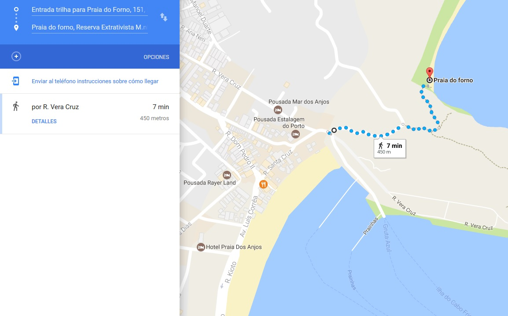
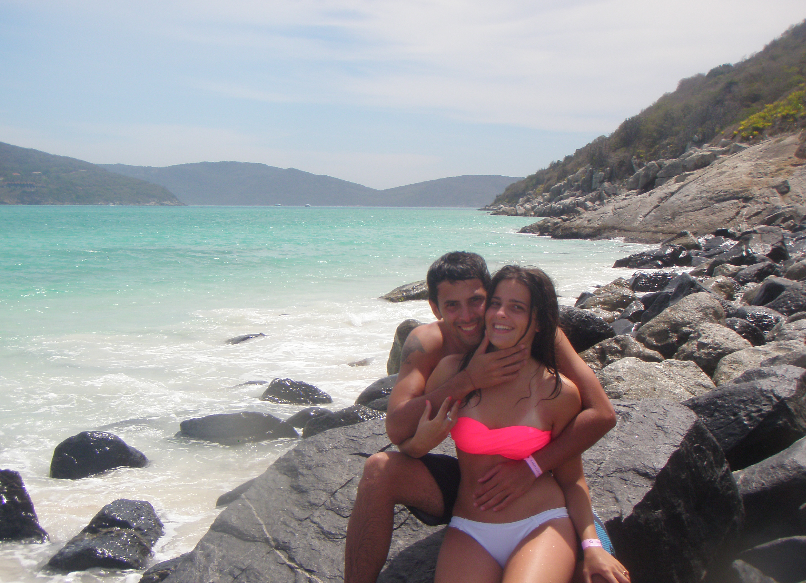

Mega guía: Playas de Brasil
En esta mega guía vas a conocer las mejores playas de Brasil desde las más famosas hasta las más desconocidas. Además, vas a obtener datos precisos sobre el clima, las playas más lindas, cómo llegar y los lugares imperdibles de cada destino.
También vas a poder acceder a mapas de las playas de Brasil personalizados por cada región donde vas a ubicar fácilmente las términales, las paradas de buses, las atracciones, los puntos de partida de lo ferries y obviamente: Las mejores playas. ¡Qué la disfrutés!
Destino Playas es una marca registrada de Gonzalo Volpe Gómez. Se prohibe la copia y distribución de las imágenes de esta guía.
Playas de Río de Janeiro:
Si bien el estado de Río de Janeiro no es uno de los estados más grandes de Brasil cuenta con la particularidad de encontrarse en una posición privilegiada que le brinda muchísima belleza a sus playas. Literalmente tiene un sinfín de playas para todos los tipos y estilos de viaje.
Es válido destacar que la ciudad de Río de Janeiro es solo una parte del estado de Río de Janeiro, es similar a lo que sucede con Capital Federal y la provincia de Buenos Aires.
El aeropuerto internacional principal de Río de Janeiro es el Aeropuerto Internacional de Galeão.
Playas de Arraial do Cabo (Río de Janeiro):
En mi opinión, la mejor playa de Río de Janeiro y una de las mejores playas de Brasil, se encuentra en Arraial do Cabo y se llama Praia do Forno. La misma se encuentra entre un morro y para ingresar a ella podemos optar por tomar una lancha o realizar una trilha (caminata) de unos 10 minutos. Las playas de Arraial do Cabo se caracterizan por tener aguas extremadamentes cristalinas, tal es así, que se conoce este destino como el "Caribe Brasileño".
¿Cómo llegar a Arraial do Cabo? Podés tomar un bus desde Río de Janeiro a Arraial do Cabo que demora entre 3hs y 4hs o también podés optar por un transfer desde el aeropuerto. En la web de Rodoviária Novo Río podrán ver los precios y la dirección de la terminal. También se puede ir en bus desde Buzios, una ciudad vecina muy pintoresca de la cual les voy a hablar abajo. La empresa que opera el trayecto Buzios-Arraial do Cabo es Salineira
Mapa Río de Janeiro / Mapa Arraial do Cabo
En el siguiente mapa de las playas de Brasil vas a poder ver la ubicación de las principales playas de Arraial do Cabo.
El clima en Río de Janeiro (Arraial do Cabo) tiene temperaturas que oscilan entre los 18º y los 29º con precipitaciones que van desde los 33mm a los 104mm mensuales. Los meses con menos lluvia en Arraial do Cabo (Río de Janeiro) son junio, julio y agosto.

Clima Arraial do Cabo.
Texto completo Arraial do CaboPlayas de Buzios (Río de Janeiro):
Si estás buscando un destino playa de Brasil para ir en pareja, Buzios es una muy buena opción para vos. La principal característica de esta ciudad, perteneciente al estado de Río de Janeiro, es que mezcla playas hermosas con un abánico de posibilidades muy grande para pasear en familia o en pareja a la noche. En la avenida principal de Buzios, Rua das Pedras, vas a encontrar barcitos, restaurantes, paseos de compra y otros sitios muy pintorescos. Además, vas a poder deleitarte tomando unos tragos frente al mar en la zona de Porto da Barra.
Algunas de las mejores playas de Buzios son Praia Tartaruga y particularmente Azeda y Azedinha. Estas últimas son dos pequeñas playas hermosísimas ideal para ver el atardecer.
¿Cómo llegar a Buzios? Podés tomar un bus desde Río de Janeiro a Buzios que demora entre 2:50hs y 3:20hs u optar por un transfer desde el Aeropuerto Internacional de Galeão (Río de Janeiro). Podés chequear los precios en Rodoviária do Rio.
Mapa Río de Janerio / Mapa Buzios
En el siguiente mapa de las playas de Brasil vas a poder ver la ubicación de las principales playas de Buzios.
El clima en Río de Janeiro (Buzios) tiene temperaturas que oscilan entre los 18º y los 29º con precipitaciones que van desde los 36mm a los 102mm mensuales. El mes con menos lluvia en Buzios (Río de Janeiro) es agosto, seguido por febrero y junio.

Clima Buzios.
Texto completo BuziosPlayas de Ilha Grande (Río de Janeiro)
La principal característica de Dos Anjos es que funciona como puerto de embarque, desde ahí, salen todas las barcas que van hacia las otras islas y también la excursión que te lleva a conocer playas no habitadas. Por este motivo, esta lleno de embarcaciones, las cuales tiran algunos residuos en el agua estropeando un poco el paisaje de ensueño. Sin embargo, es un lugar hermoso y una parada necesaria para adentrarse en el resto de Arraial do Cabo.
Recomendación: Hacer la excursión que sale desde Praia Dos Anjos y va a Praia do Farol, As prainhas y Praia do Forno es verdaderamente increíble. La misma se puede contratar directamente en la playa y no sale todo el tiempo, depende la cantidad de gente interesada en hacer el recorrido. El precio es sumamente regateable: Hay dos empresas que realizan la excursión y a veces juntan a la gente si el cupo es chico. Nosotros reservamos con una que no sumo mucha gente y nos derivaron a la otra. Al llegar a la nueva empresa me dijeron un precio, y ahí puse mi cara de póker y empece el regateo, explique que la otra empresa me había dejado a un precio mucho más barato y tras idas y vueltas terminaron accediendo al monto que era aproximadamente la mitad.
Praia do Forno
Sin exagerar, es una de las mejores playas que tuve la suerte de ver en mi vida junto y es el estimulo más grande para armar esta web. El sentimiento que tuve cuando conocí la Praia do Forno me hizo darme cuenta lo importante que era para mi conocer lugares nuevos. Desde ahí que cada vez que puedo, intento escaparme a donde sea.
Para llegar hay tres formas, una es contratando un barquito que hace de taxi y tarda unos pocos minutos, otra es contratando la excursión antes mencionada que es una opción muy recomendable ya que nos lleva también a otras playas. Y la mejor opción, a mi criterio, es hacer la conocida "Trilha" (o camino) que tiene una dificultad baja y regala la mejor vista panóramica de Praia do Forno. Lo que es cierto, es que el recorrido cuenta con unas escaleras en ascenso, si bien no son exigentes, todo depende del estado físico de cada uno. En solo 10 minutos se puede hacer tranquilamente. La entrada al camino se encuentra en la calle R. Vera Cruz, desde praia Dos Anjos se puede llegar muy fácilmente.
Caminata o "trilha" a Praia do Forno.
Junto con Mechi, fuimos tres veces a esta playa porque es simplemente perfecta. Agua totalmente cristalina, cangrejos revoloteando, algunos restaurantes con comida local, pero lo mejor de todo es que se encuentra entre morros lo cual da una sensación de estar totalmente aislado del mundo. Además, el color del agua nos invita a practicar snorkel con una visibilidad casi perfecta, donde podemos encontrar una gran cantidad de peces. En uno de los extremos se puede ver la única casa que da a la playa, la cual sigue siendo el hogar que anhelo y voy anhelar toda mi vida. Y si nos adentramos en el agua podemos llegar a un restaurante flotante muy lindo (las excursiones también llegan) donde se puede comer y luego disfrutar de un baño con las tortugas y peces que andan rondando por ahí. El nado con tortugas era algo que me interesaba mucho en mi viaje a Brasil y el mejor contacto lo tuvimos en los alrededores de este restaurante.
Praia do Forno tiene muchas ventajas y muy pocas desventajas, por no decir que tiene solamente una, la temperatura del agua, como en todo Arraial do Cabo es más baja que en Buzios y mucho más baja que playas del Caribe. Pero todo depende del umbral de frío que maneje cada uno. Yo me he bañado toda mi infancia en playas de aguas frescas como Mar del Plata, Santa Clara del Mar, Las Toninas y no he tenido ningún problema en Arraial do Cabo. Además les aseguro que con tanta belleza alrededor y tanta calidez humana brindada por los locales el frío no se siente.
Praia do Farol
Praia do Farol, Arraial do Cabo, Brasil.
Esta playa esta incluida en la excursión que podemos contratar en Praia dos Anjos. Praia do Farol se encuentra custodiada por la marina brasileña que debe dar la autorización para que los pasajeros de los barcos puedan arribar a la costa. Cuando nosotros fuimos, sucedió un hecho extraño que demoro la autorización y casi nos quedamos sin conocerla. Por suerte, se solucionó todo y la pudimos disfrutar.
Debido a los cuidados y a que no es una zona habitada, la playa se conserva casi virgen, es algo imponente a la vista humana. El ingreso a la vegetación que esta detrás de la arena esta cercada, el que manejaba el barquito nos explicó que ese lugar había sido un cementerio indígena y que por eso no se podía acceder a los caminos que se adentraban en el morro. Una historia de terror en medio del paraíso. En el lugar se permanece aproximadamente unos 40 minutos y luego el barco sigue el curso de la excursión hacia As prainhas.
As Prahinhas
Luego de visitar Praia do Farol, el barco se dirigió a As Prahinhas, parando a unos cuantos metros de la costa donde el capitán de la barquita nos invitó, al que quería, a tirarse al agua y nadar hasta la costa. Con Mechi nos miramos, pusimos un pie en la punta del barco y saltamos con fuerza a las profundidades cristalinas.
Esta playa contiene las mismas características que Praia do Farol y Praia do Forno en cuanto a la claridad del agua y lo finito de la arena. Es ideal para nadar, hacer snorkel y descansar. Un detalle que le da un toque especial es que se puede ver de fondo de la costa una escalera de madera infinita que lleva al morro, algo visualmente hermoso. Por falta de tiempo, también te dejan unos 40 minutos, no pudimos hacer ese recorrido. ¡Quedará para la próxima vez que visitemos Arraial!
Lo único que puedo decir es ¡GRACIAS ARRAIAL DO CABO! Me regalaste una nueva visión de la vida y un nuevo #DestinoPlaya que llevaré en mi corazón.